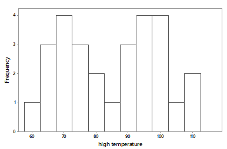
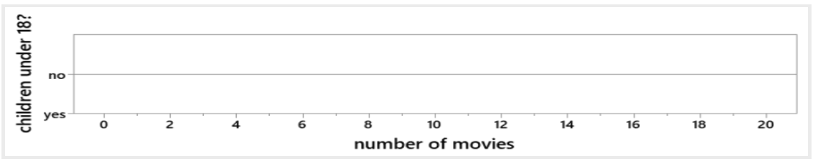
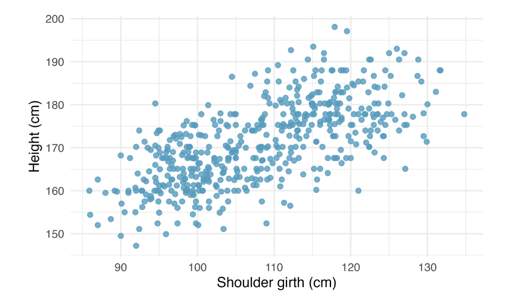

Student Qs / Check-in Debriefs
Spring 2023
Content Questions
Chapter 1
Why was telephone area code not ordinal?
The categories (e.g. 469, 323, etc) don’t have a natural order/ranking/hierarchy to them.
For example, “bigger” area codes (larger numbers) aren’t better than “smaller” area code in this case.
The “size” of the area code doesn’t have any meaning
Chapter 2
What were the key takeaways about sampling again?
Sampling bias is a feature of the sampling METHOD. That is, if your method is biased, you will end up with biased results
Having a large sample size doesn’t fix sampling bias - if your method is biased, you will still have biased results, even if you collect a lot of data
Random sampling is the key to collecting unbiased samples.
What are some ways around sampling bias?
- Random sampling! Random sampling ensures we will NOT have sampling bias. That is, if we select a random sample of people (or other observational units) to be in our study, the summary statistics calculated from our data will be unbiased estimates of the corresponding true parameter values in the population
What’s the difference between inference and exploratory analysis?
Exploratory analysis = just exploring /analyzing/investigating the data in our SAMPLE (think: tasting a spoonful of soup)
Inference = using the results from our sample to draw a general conclusion about the broader POPULATION (think: using the spoonfull to draw a conclusion about what the whole pot of soup tastes like)
Can you clarify associated vs independent?
Associated = two variables are related to one another, if we visualized them we would see a pattern/trend. Some examples:
Life expectancy and income
Height and weight
Hours of sleep and reported energy levels
Independent = two variables are NOT related to one another, if we visualized them, we would NOT see a pattern/trend (if a scatterplot, would just see random scatter). Some examples:
Eye color and what you ate for breakfast (e.g. people aren’t more likely to choose certain breakfast foods just because their eyes are blue or brown - these two things are unrelated)
Day of month you were born and how many hours of Netflix you watched
How does an observational study influence the variable?
Observational study is more about how the data is collected (i.e. no random assignment), rather than what data (variables) are collected
Observational studies also influence what conclusions we’re allowed to draw (i.e. we cannot make causal conclusions based off of observational studies).
Are the explanatory and response variables interchangeable at times? There are some times when a question/prompt asks to identify which is which (like the one in the homework for this week) that asked whether the income rate or the bachelor degree was the explanatory vs response variable. That one confused me, because I thought the explanatory should have been the income level, since that was what the research was trying to discover… But based on the graph it was the opposite way
Response = the main outcome variable the research is interested in
Explanatory = the variable that might help explain something about the outcome/response
In the income/education example:
you correctly said income is “what the research was trying to discover” - but this makes it the response variable
A person’s education level generally helps explain something about their income level, making it the explanatory
Also like you mentioned, checking a visualization is a good way to discern the difference. Response = y-axis, Explanatory = x-axis
Another tip: which one occurs earlier in time? That’s usually the explanatory. In this example, the education level is something in the past (a person already received a Bachelor’s degree or they didn’t), and it’s helping to explain their income in the present.
Group Quiz 1 Debrief
Problem 1
Researchers studied whether metal bands used for tagging penguins are harmful to their survival. Researchers tagged 100 penguins with RFID chips, and then they randomly assigned half of the penguins to also receive a metal band. Researchers then kept track of which penguins survived throughout the study and which did not.
How can we tell this is an experiment?
Because there was random assignment
Careful: all experiments must have treatment and control, but just because there is a treatment/control, doesn’t mean it’s an experiment.
Random assignment is the key distinguishing factor!
There are many (bad) observational studies that are trying to investigate a treatment - these studies don’t use random assignment, so they haven’t accounted for confounding variables, and their results may be invalid
Note, there are more sophisticated “quasi-experimental” methods for taking confounding variables into account in situations where random assignment is not possible, but we won’t be covering them in this course :)
Did the researchers use randomness in order to give all penguins the same chance of being selected for the study?
- This is asking: was random sampling used? That’s the purpose of random sampling: to give all observational units the same chance of being selected for the study (which is what protects against sampling bias)
Did the researchers use randomness in order to produce groups that were as similar as possible in all respects before the explanatory variable was imposed?
- This is asking: was random assignment used? That’s the purpose of random assignment: to produce groups that are similar as possible before the treatment is imposed (which is what protects against confounding variables)
Note: implementing a well-designed study often requires more effort, planning, and $ than a poorly designed study. There are LOTS of bad studies out there. If we aren’t explicitly told that randomness was used in a study design, we should assume it wasn’t.
The following answers received partial credit. Can you articulate why?
Explanatory variable: harmfulness of the bands
Response variable: survival rate of the penguins
Problem 2
Suppose that the observational units in a study are patients who entered the emergency room at Huntington Hospital in the previous week. For each of the following, indicate whether it is a categorical variable, a numerical variable, or not a variable with regard to these observational units.
Why are the following NOT variables?
Average wait time for the patient to be seen
Whether or not wait times tend to be longer on weekends than weekdays
Problem 3
Examples of variables that can be collected when Super Bowl games are the observational units:
Team that won (categorical)
Total points scored (numerical)
Location of the game (categorical)
Viewership/# of people who watched (numerical)
Examples of variables that can be collected when movies that won Best Picture are the observational units:
# of male actors in the film (numerical)
genre of the movie (categorical)
Why are the following NOT variables for the above observational units:
Average time length in movie
How many movies have won in each genre
# of super bowl games played
Examples of research questions
Does the location of the game affect the total points scored?
How many teams played in their home stadium? Do teams that play in their home stadium tend to win more often?
What is the average viewership of the superbowl? Has viewership changed over time?
What movie genre has the most movies that have won Best Picture?
Is the team that scores first more likely to win?
Do movies starring more male actors tend to win the Academy Award for Best Picture more often?
Tips for coming up with research questions:
What is the relationship between ____ and ____ ?
What is the average ____ ? (for numeric variables)
What proportion of [observational units] that ______ ? (for categorical variables)
Does [this group] tend to _____ more often than [that group]?
Does _____ change over time? (if you have data collected over time)
Chapter 4
When will we ever have to use a mosaic plot to organize data?
Mosaic plots are useful anytime you’re trying to investigate the relationship between two categorical variables, especially when the sample size (number of observations) is not equal in each category
In this class, you won’t need to create mosaic yourselves (although code is provided in Lab 02 to create one), but you should be able to interpret them
Group Quiz 2 Debrief
Problem 1

Difference between histogram & bar plot!
Histograms are displaying ONE numeric variable
frequency / count on the y-axis is not a variable
why we ONLY specify
aes(x = _____)forgeom_histogram
Observational units = cities, not temperatures, not days
Why is it incorrect to say the two clusters/peaks are high & low temperatures in July?
Problem 2
Average house price is $425,000. Will more, less, or exactly 50% of houses cost more than the mean?
House-prices are right-skewed, so mean is larger than the median
Median = 50% split of the data, so if mean is above the median, <50% will be above the mean
It is very possible for 90% of a company’s employees to make less than the average.
July 2022 headline: Amazon CEO Andy Jassy earned 6,474 times the median Amazon employee’s salary
$213,000,000 vs. $32,855
Problem 3

Easiest to draw extreme cases - no spread vs. max spread
Two variables: whether or not you have children under 18, # of movies
Lab 02
Question on the bonus: we were supposed to have only flights whose carriers were “AA”, “DL”, or “UA”, but in the LAB when inputting
filter(carrier == "AA", "DL", "UA"it said that it was unable to accomplish it, so I tried inputtingfilter(carrier == "AA", carrier == "DL", carrier == "UA". However, this rendered the dataset to have 0 variables, since no observational units would contain all three categories within them. So I had to list the reverse, and use the “!=” symbol to list everything that it wasn’t. So, long story short, I want to know how to do that in an easier way, because listing everything it wasn’t took much longer than being able to list the few that I did want. So how would I do that?Love the question! Two options:
the symbol
|means “or”, so we could dofilter(carrier == "AA" | carrier == "DL"| carrier == "UA")Utilize the function
%in%to search within a list of options:filter(carrier %in% c("AA", "DL", "UA"))
How will you know if a graph will be skewed left or right based on the summary statistics alone?
Recall what you know about the mean and median in skewed data: the mean gets pulled in the direction of the skew, so:
Mean > median indicates it is right-skewed
Mean < median indicates it is left-skewed
Chapter 7
What is the intercept important for?
In statistics, the slope is usually of more interest (it quantifies the relationship between x and y)
However, mathematically, we still have to have an intercept to define a line (think back to algebra: y = mx + b)
Can we please go over regression lines and calculating correlation?
<<<<<<< HEAD - Regression line: ŷ = b0 + b1x ======= - Regression line: ŷ = b0 + b1x >>>>>>> d23ec93352290d55e7a5cf0428a504472ecd3baa
- Correlation:
- Calculated as square root of *R*<sup>2</sup>. That is, $R = \sqrt{R^2}$
- It will always have the same sign ( + /−) as the slope. So make sure to put a negative sign in front of $\sqrt{R^2}$ if the slope is negative (your calculator will always just give you a positive number when you take the square root)Group Quiz 3 Debrief
Problem 2
- Data on heights were originally collected in centimeters, and then converted to inches. Does this conversion affect the correlation between partners’ heights? Explain briefly.
- Correlation is UNITLESS
- This is an example of needing to apply a concept to reason about a problem in a new context
Problem 3
- Suppose we fit a regression line to predict an Instagram post’s number of likes from the posting account’s number of followers. For a particular post, we predict the number of views to be 437, and the residual for this is 14. Did we overestimate or underestimate the number of likes? Explain briefly.
- ei = yi − ŷi
- residual = observed - predicted
- 14 = yi − 437
Problem 5

| term | estimate | std.error | statistic | p.value | |
|---|---|---|---|---|---|
| 1 | (Intercept) | 105.9 | 1.02 | 6.79 | 1.61e-11 |
| 2 | shoulder | 0.608 | 0.0304 | 31.9 | 3.78e-17 |
What’s wrong with the following answers?
- ŷ = b0 + b1x for the regression equation
- “b0 = 105.9” for interpretation of the slope
- “When x = 0, we expect y to equal 105.9 on average”
How to calculate the correlation coefficient?
- The way to undo a “square” is to take the SQUARE ROOT
- \(R = \sqrt{R^2}\)
- Pay attention to the sign! Should match the sign of the slope
How to interpret the correlation coefficient?
- As [x] increases, [y] tends to [increase/decrease]
- There is a [weak/moderately strong/strong] [positive/negative] linear relationship between [x] and [y]
Course Logistics Questions
Week 2
Will the group quiz have definition questions?
No, but you will be asked to apply definitions to answer questions
For example, you won’t be asked “what is an explanatory variable” but you might be given a research scenario and asked to identify the explanatory variable.
Another example: you won’t be asked “what’s the difference between categorical and numerical variables”? but you might be asked to identify variables from a research scenario and classify them as categorical or numerical.
How/when can we get help on Lab 00?
See the demo that Dr. Fitz recorded
Student hours on Wednesday (4:30 - 5:45) and Thursday (10-11)
Free tutoring available M/T/Th 3-6pm and W/F 10am-2pm
Post a question on Campuswire
Last 10-15 minutes of class on Thursday will be time for questions
Can we use the Chapter 1 highlights during the quiz?
- Yes! The quizzes are open book and open note :)
Will we get more vocabulary words for the chapter?
The important vocabulary / terminology will be included in the lecture slides
The textbook has a full list of terms at the end of each chapter - you are encouraged to look these over after reading the chapter as a refresher, but you won’t be required to know the ones that aren’t in the lecture slides
Week 3
What are all the things I’m supposed to turn in every week again?
Attendance notecard @ end of class (Tuesday & Thursday)
Discussion Post (Wednesday)
Reading Journal (Wednesday)
Homework (Saturday)
Lab (Saturday, only some weeks)
Weekly Check-in (Saturday)
Can we go over the homework in class?
Generally don’t plan to use class-time to discuss the homework
Instead: post your question on Campuswire, and I will respond there.
“Can you help explain ___ on HW 01?”
“Why is ___ not the correct answer to ____ ?”
“I only have one attempt left on ____! So far, I’m thinking _____. Can someone help with this?!”
“I got ___ right, but I’m still not sure I understand it. Can someone explain?”
Week 4
Will we work on the lab again this week?
Not in class
Places to get help:
Campuswire
Student hours (Mon 1-2:30, Wed 4:30 - 5:45, Th 10-11)
Tutoring (M/T/Th 3 - 6pm, W/F 10am-2pm)
Will the labs get harder?
You will be asked to do more complex tasks, but the procedures will start to feel more familiar
Suggestion: create Google doc (or something similar) with a running list of code examples
How to create a scatterplot
How to create a line plot
How to load a dataset
How to create a new variable
Which chart design is appropriate for which stats you’re presenting?
- You will learn about this in Chapters 4 & 5! Keep good notes on this :)
What do you consider excused vs. non-excused absence? And if we ever have to miss, how should we make it up?
Generally, if you let me know in advance, it’s excused
You’re responsible for all material covered in a class period - so make sure to watch the lecture recording (only available if you tell me you’ll be gone in advance)
No make-up quizzes unless coordinated with me in advance. If you do arrange a make-up, you have to take it by yourself instead of in a group.
Week 5
Can I make up the quiz I missed?
If you communicate with me in advance and have an excused absence, you can schedule a make-up quiz
All other circumstances, make-ups are not allowed.
It’s important for your learning and out of courtesy to your group members that you are present on the day of a quiz
In the event that you have to make up the quiz, know that it will be done individually and not in a group
In all circumstances, you must schedule the make-up quiz before solutions are discussed, which is usually the class period following the quiz
Where can I get more help on the labs?
Utilize your Lab Guide - all code needed for the lab is included in the guide, as well as some hints for what the exercises are asking
LA Lab Help Session on Tuesday from 1 - 2pm
Student hours
Monday 1 - 2:30
Wednesday 4:30 - 5:45
Thursday 10 - 11
Campuswire
Tutoring Center (LOTS of hours - see Canvas)
Will there be any more class-time spent on Lab 02?
No - see above for other opportunities for help
In general, only one class period will be dedicated to work on each lab. It is expected that you will work on the lab outside of class in order to complete it (it’s an assignment)
Can you post the tutoring hours again?
- They can be found here on Canvas.
Week 6
Will any of the concepts from Lab 02 be on Lab 03?
Probably! The general code you’ve been learning for creating visualizations, filtering data, creating new variables, etc will continue to be relevant in future labs
However, you will be using new datasets, and using R to accomplish new data analysis/statistical tasks each time. So for example, in Lab 03 you will apply regression analyses learned in Chapter 7, and in Lab 04 you will apply methods learned in Chapter 13
Is there any way I can make up the labs for partial credit?
Labs are accepted up to 1 week late (with a 5% deduction each day its late)
Labs will remain a 0 if not turned in 7 days after deadline
However, if you are facing any unusual or long-term life circumstances that are interfering with your ability to engage academically, come talk to me, and we can determine appropriate accommodations and a path forward
Is there a time we can review the material we learned this week?
All of Week 7 will be re-iterating the concepts learned in Week 6 (regression):
Lab 03 (Tuesday) will be using regression to analyze data in R (we’ll start with a quick review of the main concepts)
We’ll have a Kahoot review before the Group Quiz over Chapter 7 on Thursday
Will we get packets or worksheets for future lectures?
Will go back to slides as the main mode of content delivery after Chapter 7, but will continue to provide chapter highlight handouts as well as occasional activity worksheets
Will see more handout type lecture material in Chapters 16 - 20
Week 7
Will Lab 04 include questions about chapter 7?
- No. Lab 03 is focused on regression (Ch 7), Lab 04 will be focused on content from Chapter 13
Is the delay of Lab 03 going to have an effect on the total # of labs?
- Nope! Believe it or not, there is only one more lab left! Lab 04, which will be in Week 10